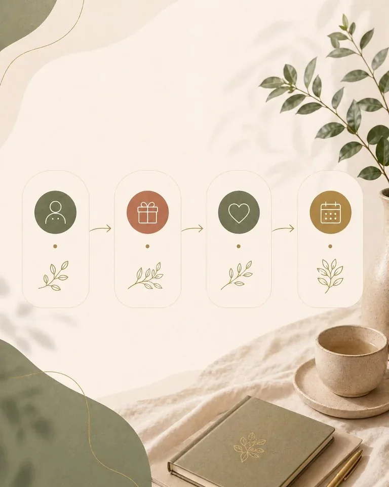
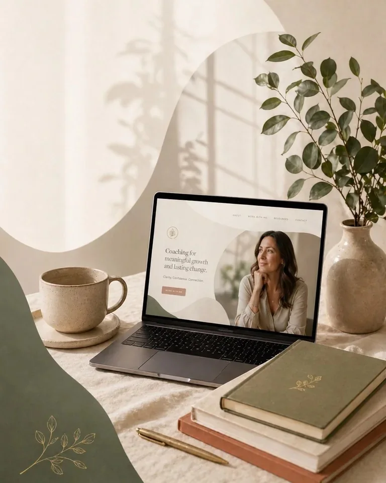
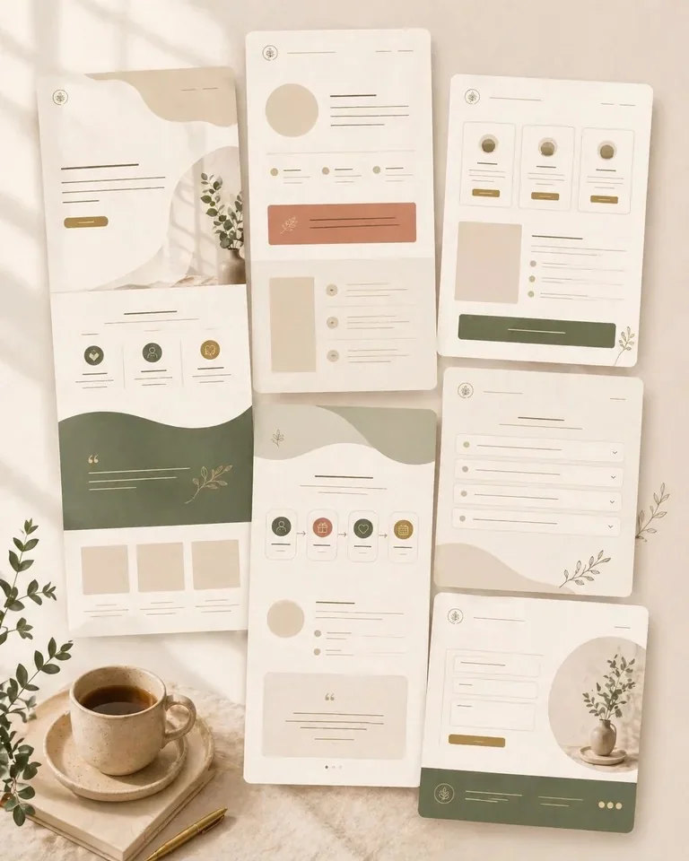
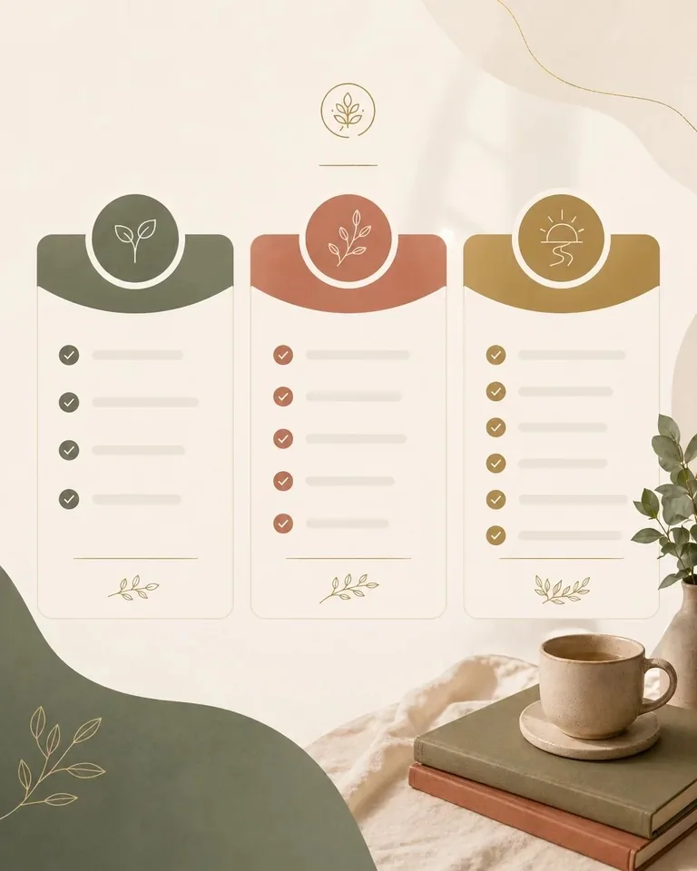

Message unclear
People do not immediately understand who you help.
Trust-led website creation
Clean static landing pages for coaches who need their message, offer, trust cues, and next step to feel clear online.
The gap
A coach can have real depth, but the page still fails to show the message, offer, trust, and next step clearly.

Clarity diagnostic
When the message, offer, trust cues, and next step are separated, visitors have to work too hard to understand whether the coaching is for them.
People do not immediately understand who you help.
Sessions or packages are not easy to choose.
Your presence is stronger in conversation than on the page.
Visitors do not know whether to book, enquire, or message.
The fix is not more decoration. It is a clearer pathway.
The pathway
It shows who you help, what you offer, why it matters, and what someone should do next — without pressure or confusion.
Clarity leads people forward.
What the page includes

Clear opening message.
Short trust-building introduction.
Simple offer summary.
What happens next.
One clear action.
Readable on mobile and desktop.
Website creation options
Begin with a clean static page. Expand only when the core pathway is clear.

For a coach who needs a professional page to share now.
For a fuller page that explains the work and builds trust.
For planning deeper features after the page foundation exists.
Advanced integrations are separate and only included when agreed and tested.
How it works

People do not only read a coaching website. They feel whether it is safe to continue.
Why trust-led design
FAQ
Not necessarily. A focused landing page may be the better first step.
No. This is a bounded page build and message-structure service.
Simple links can be included now. Advanced features are separate expansion work.
No result can be guaranteed. The purpose is clarity, credibility, and a simpler next step.

Ready endpoint
Send your current page, notes, or coaching offer idea. I’ll shape a calm first-page direction around message, offer, trust cues, and next step.
A clear message builds trust. Trust creates movement.